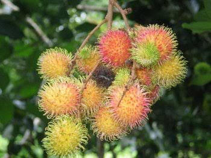
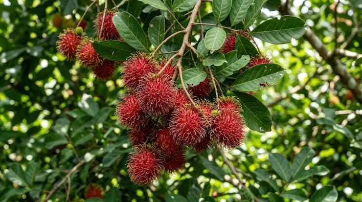
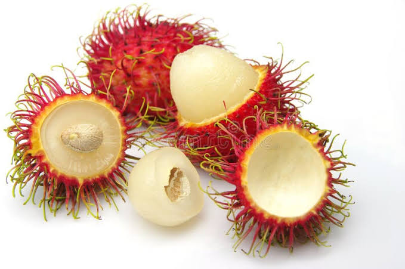
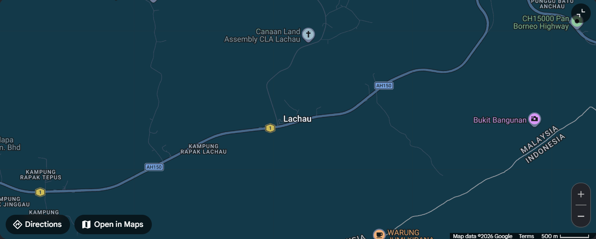

Plant Identification
Guidelines for Plant Identification
- Maximum of 4 pictures: Upload up to four pictures of the same plant.
- Include a plant feature: Try to show a leaf, flower, fruit, or bark clearly.
Example Identification Result
Plant Names
- Scientific Plant Name:
- Nephelium lappaceum
- Common Name:
- Rambutan
Plant Identified



Care Tips for This Plant
-
Water during dry spells
- Rambutan needs a lot of rain
- Only water it if there has been no rain for a long time.
- Make sure the soil drains well so the roots do not sit in water.
-
Fertilise twice a year
- Feed the tree after harvest and again near the end of the rainy season.
- Spread the fertiliser around the base of the tree, but keep it away from the trunk.
- Give young trees less than older ones.
-
Prune lightly
- Only cut back branches that are dead or damaged.
- Plant the tree somewhere sheltered because strong wind can knock off flowers and fruit.
- Check the trunk now and then for signs of disease.
Right environment for this plant
-
Warm and humid
- Rambutan grows best in the hot, damp lowlands of the tropics.
- It needs warm weather all year round and does not survive frost.
- A short dry season is fine, but it should not last long.
-
Plenty of rain
- The tree needs heavy rain spread evenly through the year.
- A long dry spell will reduce flowering and fruit.
- If the dry season drags on, water the tree to help it keep its fruit.
-
Rich, well-drained soil
- Deep, fertile soil with plenty of organic matter suits it best.
- The ground must drain freely, because the roots do not like standing water.
- Slightly acidic soil is ideal; very alkaline soil makes the leaves turn yellow.
Main Location Where the Plant Can Be Found
